December 2025
Hi, everyone,
Mark and I hope that all is well with you, and we wish you the best for 2026.
This year we visited both Mark's family and mine more often than usual, and appreciated our time with them very much. In May Mark's mother passed away, at the age of 97. She was inspirational in so many ways, and we miss our daily phone calls with her. We traveled to NY state three times over the summer, spending several weeks there for the funeral, Mark's niece's wedding, and to help with sorting out the contents of his parents' house. At the same time we were able to connect with Mark's siblings, siblings-in-law, nieces, nephews, and nephews-in-law, and their kids, much more, which was wonderful. We also traveled to Indiana to visit with my brothers and sisters-in-law several times, and enjoyed watching the birds at my brother's feeder as well as a green heron who posed for us in a neighborhood pond.
| 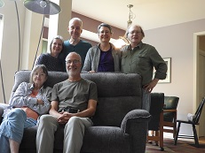 | 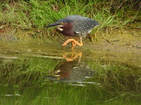 |
Our work lives took a rather unexpected turn this summer. In June we found that some large-scale computations we'd been working on for many years (roughly a decade) in the field of knot theory resulted in a surprising outcome, showing that an 88-year-old conjecture is not true. Even more surprising to us, after we posted a preprint about the result on the web, we started getting emails from reporters asking for interviews! In case you're curious, there is a nice article in Wired Magazine at https://www.wired.com/story/unpicking-how-to-measure-the-complexity-of-knots/ and a you-tube video explaining the result (and proving it with rope!) by a well-known math expositor at https://www.youtube.com/watch?v=Dx7f-nGohVc. It has been a neat experience, although at times a bit overwhelming; the best part of all has been renewing contact with many mathematical friends who wrote to us after they saw the news, and getting to catch up with them.
Another nice piece of news for the year is that my health has improved. After having trouble with atrial fibrillation for the past few years, I had an ablation procedure in February; after months of increased irregular beats, things have calmed, and I have now had more than 10 months with no (or no long) fibrillation. I very much appreciate how much less worrisome it is to drive, travel, etc.
We continue to find opportunities to enjoy nature and record it in pictures. In August we traveled to Yellowstone National Park and spent several days seeing more of the geothermal features there than ever before. Here are a few of our favorites, namely Daisy geyser, Morning Glory Pool, Cliff geyser (with little Spouter geyser also erupting in the background), Artists' Paint Pots, Yellowstone canyon (with its sides of yellow stone), and Fountain Paint Pots:
| 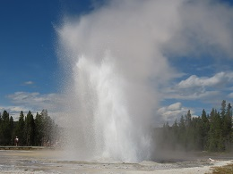 |
| 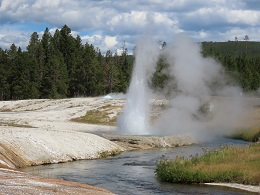 |
| 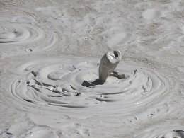 | 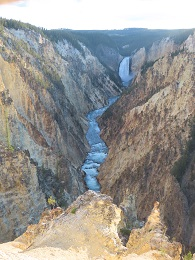 | 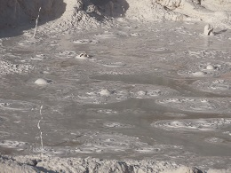 |
Along the way we saw a (super-cute!) pair of baby ruby-crowned kinglets and an osprey. We also spent a couple of days in Grand Teton National Park, where we saw the well-camouflaged dusky grouse below. We ended the week with a great day of birding at Antelope Island State Park in Utah with our friend Melanie; pictured here are a black-necked stilt and a group of red-necked phalaropes surrounded by masses of brine flies.
| 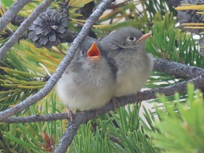 | 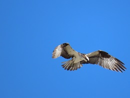 |
| 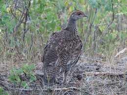 |

| 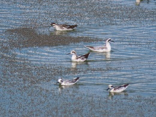 |
While on the east coast this summer we took a few days to visit the Blue Ridge Parkway, and several places in NJ and NY states. The wildflowers were awesome!!
| 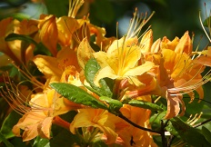 | 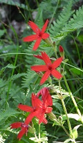 | 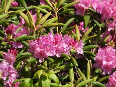 |
| 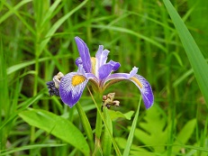 | 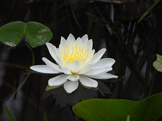 | 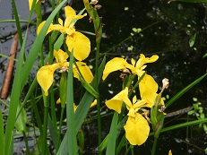 |
| 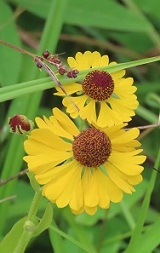 | 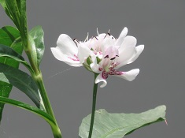 | 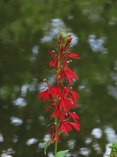 |
The top row are flame azalea, fire pink, and Catawba rhododendron along the Blue Ridge. The middle row has harlequin blue flag, American water lily, and yellow flag from Sapsucker Woods in Ithaca. And on the bottom are purple sneezeweed from the Great Swamp (NJ), and American water-willow and cardinal flower in Princeton.
Here in Nebraska spring migration brought 80 American white pelicans to a reservoir about 10 miles from our home. We also made our annual daytrip to see the sandhill cranes, and watched them gathering on the Platte River at sunset.
| 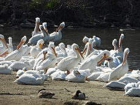 | 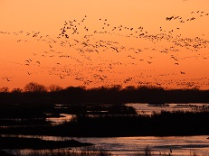 |
Happy new year to all of you! Mark and I wish you a wonderful year in 2026.
Susan